Entanglement entropy (EE) is one of the most fundamental diagnostic quantities in quantum many-body physics. It answers a simple question: how strong are the quantum correlations between subsystems? This quantity can distinguish thermalized phases from localized phases, pinpoint quantum phase transitions, and detect topological order — and computing it requires just one linear algebra operation: the singular value decomposition (SVD).
纠缠熵（entanglement entropy, EE）是量子多体物理中最核心的诊断量之一。它回答一个简单的问题：子系统之间具有多强的量子关联？这个量可以区分热化相与局域化相、标定量子相变、判定拓扑序——而计算它只需要一个线性代数操作：奇异值分解（SVD）。
The goal of this article is to take entanglement entropy from definition to code. After reading through the entire text, the reader should be able to:
本文的目标是把纠缠熵从定义落实到代码。读者跟完全文后，应能：
- Hand-calculate the entanglement entropy of any small state
- Understand the numerical computation strategies for EE and choose the appropriate implementation based on problem size
- Use concise Python code to compute entanglement entropy for 1D and 2D lattice systems, and compare results with theoretical predictions
- 手算任何小态的纠缠熵
- 理解纠缠熵的数值计算思路，并能根据问题规模选择合适实现
- 用简洁的Python 计算一维、二维格点系统的纠缠熵，并与理论预言对比
The complete code is available at entanglement-entropy-tutorial, including the core module ee/ (general methods + correlation matrix method), lattice construction lattices/ (1D chain, 2D square, honeycomb), and demo scripts in demos/.
完整代码见 entanglement-entropy-tutorial，包含核心模块 ee/（通用方法 + 关联矩阵方法）、格点构造 lattices/（1D 链、2D 方格子、蜂窝格点），以及 demos/ 下的演示脚本。
1. Why Compute Entanglement Entropy 1. 为什么要计算纠缠熵
Take a pure state $|\psi\rangle$ of a quantum system and divide it into parts $A$ and $B$. The entanglement entropy $S_A$ quantifies the strength of quantum correlations between $A$ and $B$. Different physical phases obey distinctly different scaling laws for entanglement entropy — this is precisely the source of its power as a diagnostic:
取一个量子系统的纯态 $|\psi\rangle$，把它分成 $A$ 和 $B$ 两部分。纠缠熵 $S_A$ 量化的是 $A$ 与 $B$ 之间的量子关联强度。不同物理相的纠缠熵遵循截然不同的标度律，这正是它作为诊断量的威力所在：
| Physical Phase物理相 | Typical EE Scaling典型纠缠熵标度 | Key References代表文献 |
|---|---|---|
| 1D gapped ground state一维有隙基态 | $S = O(1)$ (area law面积律) | Review: [1]; rigorous proof: Hastings, J. Stat. Mech. (2007) P08024综述参见 [1]；严格证明见 Hastings, J. Stat. Mech. (2007) P08024 |
| 1D critical state (CFT, central charge $c$)一维临界态（CFT，中心荷 $c$） | $S = \frac{c}{3}\ln L$ | Calabrese & Cardy [2] |
| Thermalized eigenstate (ETH)热化本征态（ETH） | $S \sim \frac{V}{2}\ln 2$ (volume law体积律) | Deutsch [12], Srednicki [13], Rigol [14] |
| MBL eigenstateMBL 本征态 | $S = O(1)$ (area law面积律) | Bauer & Nayak [4] |
| Many-body scar state多体疤痕态 | Specific few eigenstates deviate from ETH (weak ergodicity breaking)特定少数本征态纠缠显著偏离 ETH 预言（weak ergodicity breaking） | Turner et al. [5] |
| 2D Dirac semimetal (corner subregion)二维 Dirac 半金属（尖角子区） | $S = \alpha |\partial A| + a_2(\theta) \ln |\partial A| + \cdots$ | D'Emidio et al. [6] ($a_2(\pi/3) \approx 0.0331$) |
This table shows that efficiently computing entanglement entropy helps us identify phases of matter.
这张表说明：高效计算纠缠熵，能帮助我们识别物质相。
The rest of the article is organized as follows: first we establish the mathematical framework of partial trace and Schmidt decomposition (§2–3), then practice with minimal examples (§4), discuss four general numerical algorithms and their trade-offs (§5), introduce the correlation matrix method specific to free fermions (§6), verify CFT predictions on 1D free fermion chains with code (§7), and finally extend to 2D square and honeycomb lattices with comparison to literature benchmarks (§8).
下文的组织方式是：先建立偏迹和 Schmidt 分解的数学框架（§2–3），再用最小例子练手（§4），然后讨论四种通用数值算法及其优劣（§5），接着介绍自由费米子专属的关联矩阵方法（§6），再用代码在一维自由费米子链上验证 CFT 预言（§7），最后推广到二维方格子和蜂窝格点并与文献基准对比（§8）。
2. Partial Trace and Reduced Density Matrix 2. 偏迹与约化密度矩阵
The first step in computing entanglement entropy is constructing the reduced density matrix $\rho_A$, which is defined through the partial trace operation. This section covers the partial trace from definition to component formula to matrix form.
计算纠缠熵的第一步是构造约化密度矩阵 $\rho_A$，而它的定义依赖偏迹（partial trace）运算。这一节把偏迹从定义到分量公式再到矩阵形式完整讲一遍。
2.1 Definition of the Partial Trace 2.1 偏迹的定义
Intuition: We only care about subsystem $A$ and are not interested in the details of $B$, so we sum over all degrees of freedom of $B$ to obtain an effective state describing only $A$. This "summing over $B$" operation is called the partial trace.
直觉：我们只关心子系统 $A$，而对 $B$ 的细节不感兴趣，所以把 $B$ 的所有自由度求和掉，得到一个只描述 $A$ 的有效状态。这个"对 $B$ 求和"的操作就叫偏迹（partial trace）。
Formal definition: Let the total Hilbert space be $\mathcal{H} = \mathcal{H}_A \otimes \mathcal{H}_B$, with dimensions $d_A$ and $d_B$ respectively. For a density matrix $\rho$, the partial trace over $B$ is defined as
正式定义：设总系统的 Hilbert 空间是 $\mathcal{H} = \mathcal{H}_A \otimes \mathcal{H}_B$，维度分别为 $d_A$ 和 $d_B$。对密度矩阵 $\rho$，对 $B$ 求偏迹定义为
$$\rho_A \equiv \operatorname{Tr}_B \rho = \sum_{j=1}^{d_B} \langle j|_B\, \rho\, |j\rangle_B,$$
where $\{|j\rangle_B\}$ is any complete orthonormal basis of $\mathcal{H}_B$, and the result $\rho_A$ is an operator acting only on $\mathcal{H}_A$. Similarly, $\rho_B = \operatorname{Tr}_A \rho$.
其中 $\{|j\rangle_B\}$ 是 $\mathcal{H}_B$ 的任意一组完备正交归一基，结果 $\rho_A$ 是一个只作用在 $\mathcal{H}_A$ 上的算符。类似地，$\rho_B = \operatorname{Tr}_A \rho$。
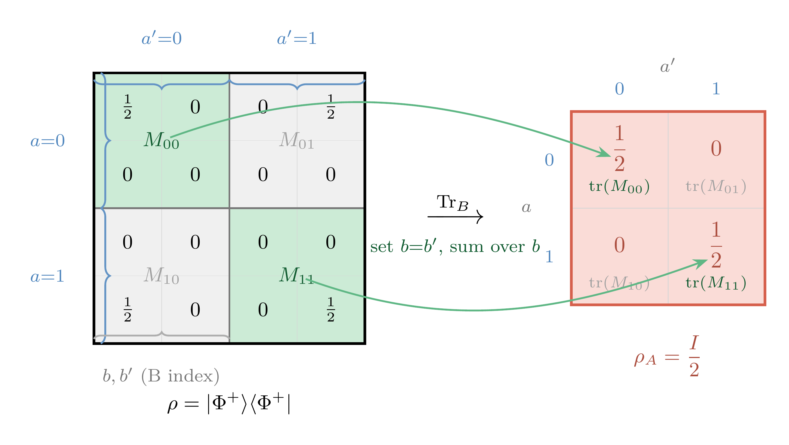
From Dirac notation to matrix elements: To turn the above definition into a computable formula, write out the matrix elements in the product basis $|a\rangle_A|b\rangle_B$:
从 Dirac 符号到矩阵元：为了把上述定义变成可计算的公式，用积基 $|a\rangle_A|b\rangle_B$ 写出矩阵元
$$\rho_{ab;\,a'b'} \equiv \langle a,b|\rho|a',b'\rangle,$$
and substituting into the definition, the partial trace is equivalent to
代入定义，偏迹等价于
$$(\rho_A)_{a,a'} = \sum_{b=1}^{d_B} \rho_{ab;\,a'b}.$$
The essence of this step is: set the two $B$ indices equal ($b'=b$) and sum over $b$ (index contraction), leaving only $a,a'$. The output is naturally a $d_A \times d_A$ matrix.
这一步的本质是：令 $B$ 的两个索引相等（$b'=b$）并对 $b$ 求和（索引收缩），只留下 $a,a'$，输出自然是 $d_A \times d_A$ 的矩阵。
Block-trace matrix perspective: For two qubits ($d_A=d_B=2$), the basis in lexicographic order is $|00\rangle, |01\rangle, |10\rangle, |11\rangle$, with the outer index $a$ first and the inner index $b$ second. Partition the $4\times4$ matrix by outer indices $a,a'$ into four $2\times2$ blocks:
分块取迹的矩阵视角：对两比特（$d_A=d_B=2$）来说，基底按字典序排列为 $|00\rangle, |01\rangle, |10\rangle, |11\rangle$，即外层指标 $a$ 在前、内层指标 $b$ 在后。将 $4\times4$ 矩阵按外层指标 $a,a'$ 切成四个 $2\times2$ 子块：
$$\rho=\begin{bmatrix}M_{00} & M_{01}\\M_{10} & M_{11}\end{bmatrix},\qquad M_{aa'}\in\mathbb{C}^{2\times2},$$
where each block $M_{aa'}$ has row and column indices corresponding to $B$'s indices $b,b'$. Therefore summing over $b$ (setting $b'=b$) is equivalent to taking the ordinary trace of each block:
每个子块 $M_{aa'}$ 的行列指标恰好是 $B$ 的指标 $b,b'$。因此对 $b$ 求和（令 $b'=b$）就等于对每个子块取普通迹：
$$\rho_A=\begin{bmatrix}\operatorname{tr}(M_{00}) & \operatorname{tr}(M_{01})\\\operatorname{tr}(M_{10}) & \operatorname{tr}(M_{11})\end{bmatrix}.$$
Physical example: Bell state
物理例子：Bell 态
Take the maximally entangled state
取最大纠缠态
$$|\Phi^+\rangle = \frac{1}{\sqrt{2}}\bigl(|00\rangle + |11\rangle\bigr),$$
whose density matrix (in the $|00\rangle,|01\rangle,|10\rangle,|11\rangle$ basis) is
其密度矩阵（按 $|00\rangle,|01\rangle,|10\rangle,|11\rangle$ 排列）为
$$\rho = |\Phi^+\rangle\langle\Phi^+| =\frac{1}{2}\begin{bmatrix}1 & 0 & 0 & 1\\0 & 0 & 0 & 0\\0 & 0 & 0 & 0\\1 & 0 & 0 & 1\end{bmatrix}=\frac{1}{2}\begin{bmatrix}M_{00} & M_{01}\\M_{10} & M_{11}\end{bmatrix},$$
where
其中
$$M_{00}=\begin{bmatrix}1&0\\0&0\end{bmatrix},\quad M_{01}=\begin{bmatrix}0&1\\0&0\end{bmatrix},\quad M_{10}=\begin{bmatrix}0&0\\1&0\end{bmatrix},\quad M_{11}=\begin{bmatrix}0&0\\0&1\end{bmatrix}.$$
Taking the trace of each block:
对每个子块取迹：
$$\operatorname{tr}(M_{00})=1,\quad\operatorname{tr}(M_{01})=0,\quad\operatorname{tr}(M_{10})=0,\quad\operatorname{tr}(M_{11})=1.$$
Therefore
因此
$$\rho_A = \frac{1}{2}\begin{bmatrix}1 & 0\\0 & 1\end{bmatrix}= \frac{I}{2}.$$
This is exactly the expected result: a Bell state is maximally entangled, so from $A$'s perspective it appears completely mixed (equal-weight superposition). The same steps verified with the index formula:
这正是我们期待的结果：Bell 态是最大纠缠态，从 $A$ 的视角看完全是混态（等权叠加）。同样的步骤用索引公式验证：
$$(\rho_A)_{00}=\rho_{00;00}+\rho_{01;01}=\tfrac{1}{2}+0=\tfrac{1}{2},\quad(\rho_A)_{11}=\rho_{10;10}+\rho_{11;11}=0+\tfrac{1}{2}=\tfrac{1}{2},$$
$$(\rho_A)_{01}=\rho_{00;10}+\rho_{01;11}=0+0=0,\quad(\rho_A)_{10}=\rho_{10;00}+\rho_{11;01}=0+0=0.$$
And once more directly from the Dirac definition:
再按 Dirac 定义直接算一遍，由
$$\rho_A=\sum_{j=0}^1 \langle j|_B\,\rho\,|j\rangle_B=\langle0|_B\rho|0\rangle_B+\langle1|_B\rho|1\rangle_B,$$
with
以及
$$\rho=\frac12\Bigl(|00\rangle\langle00|+|00\rangle\langle11|+|11\rangle\langle00|+|11\rangle\langle11|\Bigr),$$
projecting term by term gives
逐项投影可得
$$\langle0|_B\rho|0\rangle_B=\frac12|0\rangle_A\langle0|_A,\qquad\langle1|_B\rho|1\rangle_B=\frac12|1\rangle_A\langle1|_A.$$
Therefore
因此
$$\rho_A=\frac12|0\rangle\langle0|+\frac12|1\rangle\langle1|=\frac12\begin{bmatrix}1&0\\0&1\end{bmatrix}.$$
This is fully consistent with both the block-trace and index-contraction results, showing that the "Dirac definition," "index contraction formula," and "block-trace algorithm" are simply different ways of writing the same operation.
这与上面的分块取迹和索引收缩结果完全一致，说明 "Dirac 定义"、"索引收缩公式"、"分块取迹算法" 三者只是同一运算的不同写法。
2.2 Coefficient Matrix and Reduced Density Matrix 2.2 系数矩阵与约化密度矩阵
The previous section computed the same partial trace from three perspectives: blocks, indices, and Dirac notation. Now we compress this machinery into a more compact form applicable to any pure state.
上一节用分块、索引、Dirac 三种视角计算了同一个偏迹。现在把这套操作压缩成一个更紧凑的形式，适用于任意纯态。
Expand a pure state in the product basis $|i\rangle_A \otimes |j\rangle_B$:
在积基 $|i\rangle_A \otimes |j\rangle_B$ 下展开纯态：
$$|\psi\rangle = \sum_{i=1}^{d_A} \sum_{j=1}^{d_B} c_{ij}\, |i\rangle_A |j\rangle_B$$
Arrange all coefficients $c_{ij}$ into a $d_A \times d_B$ matrix $C$: row $i$ corresponds to basis vector $|i\rangle_A$ of subsystem $A$, column $j$ corresponds to basis vector $|j\rangle_B$ of subsystem $B$.
把所有系数 $c_{ij}$ 排成一个 $d_A \times d_B$ 的矩阵 $C$：第 $i$ 行对应子系统 $A$ 的基矢 $|i\rangle_A$，第 $j$ 列对应子系统 $B$ 的基矢 $|j\rangle_B$。
Each element of the reduced density matrix can be understood as follows: fixing a pair $(i,i')$,
约化密度矩阵的每个元素可以这样理解：固定一对 $(i,i')$ 后，
$$(\rho_A)_{ii'} = \langle i|_A \rho_A |i'\rangle_A = \sum_{j=1}^{d_B} c_{ij}\, c_{i'j}^*$$
This is precisely the conjugate inner product of row $i$ and row $i'$ of $C$ — element-wise multiplication along the column index $j$ followed by summation. Similarly,
这正是 $C$ 的第 $i$ 行与第 $i'$ 行的共轭内积——按列指标 $j$ 逐元素相乘再求和。类似地，
$$(\rho_B)_{jj'} = \sum_{i=1}^{d_A} c_{ij}\, c_{ij'}^*$$
is the conjugate inner product of column $j$ and column $j'$ of $C$.
是 $C$ 的第 $j$ 列与第 $j'$ 列的共轭内积。
The component formula immediately becomes a matrix expression:
于是分量公式立刻变成矩阵形式：
$$\rho_A = C C^\dagger, \qquad \rho_B = C^\dagger C$$
These two matrices share the same nonzero eigenvalues (this is a standard result in linear algebra: $AB$ and $BA$ have the same nonzero eigenvalues). Therefore $S_A = S_B$ — the entanglement entropy of a pure state is the same for both subsystems.
这两个矩阵有相同的非零本征值（这是线性代数的标准结论：$AB$ 和 $BA$ 的非零特征值相同）。因此 $S_A = S_B$——纯态的纠缠熵对两个子系统是一样的。
Furthermore, the fact that entanglement entropy "reduces to finding singular values" can be seen directly from the SVD. Let
更进一步，纠缠熵之所以"等同于求奇异值"，可以直接从 SVD 看出来。设
$$C = U\Sigma V^\dagger,$$
then taking the conjugate transpose gives
两边取厄米共轭可得
$$C^\dagger = (U\Sigma V^\dagger)^\dagger = V\Sigma^\dagger U^\dagger.$$
Therefore
则
$$\rho_A = CC^\dagger = U\Sigma\Sigma^\dagger U^\dagger,\qquad\rho_B = C^\dagger C = V\Sigma^\dagger\Sigma V^\dagger.$$
The nonzero diagonal entries of both $\Sigma\Sigma^\dagger$ and $\Sigma^\dagger\Sigma$ are $\sigma_k^2$ (where $\sigma_k$ are the singular values of $C$). Therefore the nonzero eigenvalues of $\rho_A$ and $\rho_B$ are both
其中 $\Sigma\Sigma^\dagger$ 与 $\Sigma^\dagger\Sigma$ 的非零对角元都是 $\sigma_k^2$（$\sigma_k$ 为 $C$ 的奇异值）。因此 $\rho_A,\rho_B$ 的非零本征值都是
$$\lambda_k=\sigma_k^2.$$
Substituting into the von Neumann entropy:
代入冯诺依曼熵：
$$S_A = -\sum_k \lambda_k\ln\lambda_k = -\sum_k \sigma_k^2 \ln \sigma_k^2.$$
So algorithmically there is no need to explicitly construct and diagonalize $\rho_A$; one only needs to find the singular values of $C$ to obtain the entanglement entropy.
所以算法上无需先显式构造并对角化 $\rho_A$；只要求出 $C$ 的奇异值即可得到纠缠熵。
First consider the general case: one element of $\rho_A$ is the conjugate inner product of two rows of $C$; arranging all such inner products gives $\rho_A = CC^\dagger$.
先看一般情形：$\rho_A$ 的一个矩阵元，就是 $C$ 的两行做共轭内积；把所有这样的内积排起来，就得到 $\rho_A = CC^\dagger$。
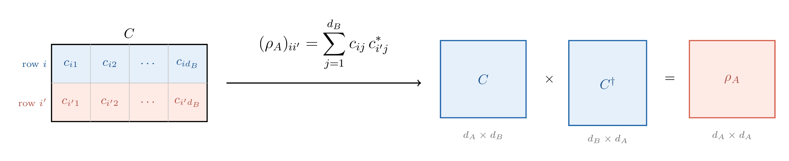
Now consider the simplest concrete example: the Bell state. Its two row coefficient vectors are mutually orthogonal, and each row has squared norm $1/2$, so we immediately get $\rho_A = \mathrm{diag}(1/2,1/2)$.
再看 Bell 态这个最简单的具体例子。它的两行系数向量彼此正交，而且每一行的范数平方都是 $1/2$，所以立刻得到 $\rho_A = \mathrm{diag}(1/2,1/2)$。
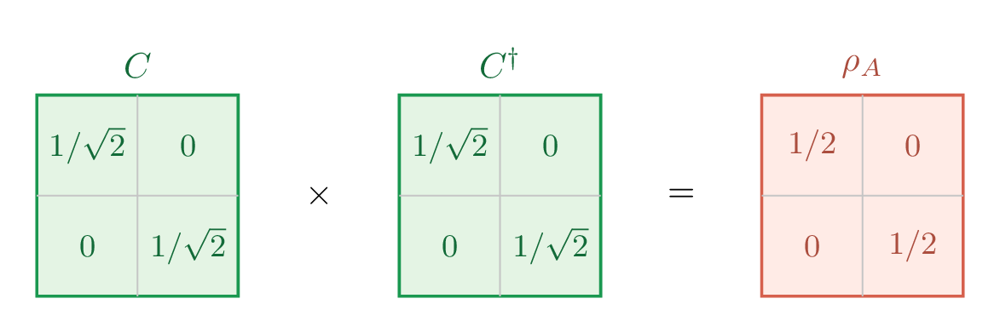
Key point: The entire mathematical problem of computing entanglement entropy reduces to — obtaining the coefficient matrix $C$, then finding its singular values.
要点：计算纠缠熵的全部数学问题归结为——拿到系数矩阵 $C$，然后求它的奇异值。
3. Schmidt Decomposition 3. Schmidt 分解
3.1 What Is the Schmidt Decomposition 3.1 什么是 Schmidt 分解
The Schmidt decomposition theorem states: any pure state $|\psi\rangle \in \mathcal{H}_A \otimes \mathcal{H}_B$ can be written as
Schmidt 分解定理说的是：任意纯态 $|\psi\rangle \in \mathcal{H}_A \otimes \mathcal{H}_B$ 都可以写成
$$|\psi\rangle = \sum_{k=1}^{\chi} \sigma_k\, |u_k\rangle_A |v_k\rangle_B$$
where $\sigma_k > 0$, $\sum_k \sigma_k^2 = 1$, $\{|u_k\rangle_A\}$ and $\{|v_k\rangle_B\}$ are orthonormal sets in $\mathcal{H}_A$ and $\mathcal{H}_B$ respectively. $\chi \leq \min(d_A, d_B)$ is called the Schmidt rank.
其中 $\sigma_k > 0$、$\sum_k \sigma_k^2 = 1$，$\{|u_k\rangle_A\}$ 和 $\{|v_k\rangle_B\}$ 分别是 $\mathcal{H}_A$ 和 $\mathcal{H}_B$ 中的正交归一集。$\chi \leq \min(d_A, d_B)$ 称为 Schmidt 秩。
Compared to the general product-basis expansion $|\psi\rangle = \sum_{ij} c_{ij}|i\rangle_A|j\rangle_B$, the Schmidt decomposition has two key differences:
和一般的积基展开 $|\psi\rangle = \sum_{ij} c_{ij}|i\rangle_A|j\rangle_B$ 相比，Schmidt 分解有两个关键区别：
- Single sum: There is only one summation index $k$, not double indices $i,j$. This means $A$ and $B$ basis vectors are paired one-to-one.
- State-dependent basis: $\{|u_k\rangle\}$ and $\{|v_k\rangle\}$ are not a pre-chosen computational basis, but determined by $|\psi\rangle$ itself — a different state gives a different basis.
- 单求和：只有一个求和指标 $k$，而不是双指标 $i,j$。这意味着 $A$ 和 $B$ 的基矢一一配对。
- 基是态依赖的：$\{|u_k\rangle\}$ 和 $\{|v_k\rangle\}$ 不是事先选好的计算基，而是由 $|\psi\rangle$ 本身决定的——换一个态就换一组基。
3.2 Schmidt Decomposition Is SVD 3.2 Schmidt 分解就是 SVD
The Schmidt decomposition is nothing mysterious: perform SVD on the coefficient matrix $C$ (the $d_A \times d_B$ matrix defined in §2),
Schmidt 分解并不神秘：把系数矩阵 $C$（第2节定义的 $d_A \times d_B$ 矩阵）做 SVD，
$$C = U \Sigma V^\dagger,$$
then let $|u_k\rangle_A$ be the expansion of the $k$-th column of $U$ in the computational basis, and $|v_k\rangle_B$ be the expansion of the $k$-th column of $V$ in the computational basis:
然后令 $|u_k\rangle_A$ 为 $U$ 的第 $k$ 列在计算基下的展开，$|v_k\rangle_B$ 为 $V$ 的第 $k$ 列在计算基下的展开：
$$|u_k\rangle_A = \sum_i U_{ik}\,|i\rangle_A,\qquad|v_k\rangle_B = \sum_j V_{jk}^*\,|j\rangle_B,$$
and you get the Schmidt decomposition. In other words, SVD simultaneously does two things: finds the optimal basis (columns of $U$ and $V$), and reads off the weight of each basis pair (singular values $\sigma_k$).
就得到了 Schmidt 分解。换句话说，SVD 同时做了两件事：找到最优基（$U$ 和 $V$ 的列），以及读出每对基矢的权重（奇异值 $\sigma_k$）。
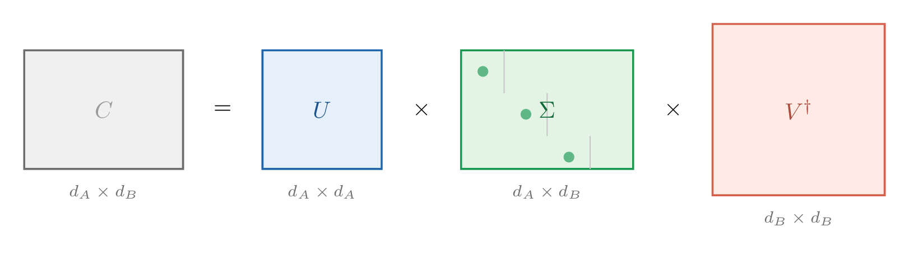
3.3 Why Introduce It Here 3.3 为什么在这里讲
§2 already gave a complete computational method: perform SVD on $C$ to get the entanglement entropy. So why introduce the Schmidt decomposition? Because it provides a language and intuition widely used in quantum information:
第2节已经给出了完整的计算方法：对 $C$ 做 SVD 就能得到纠缠熵。那为什么还要引入 Schmidt 分解？因为它提供了一套在量子信息中广泛使用的语言和直觉：
- Schmidt rank $\chi$ directly reflects the "dimension" of entanglement: $\chi = 1$ is equivalent to a product state (zero entanglement), $\chi = \min(d_A, d_B)$ means maximal possible entanglement.
- Schmidt coefficients $\{\sigma_k\}$ characterize the structure of entanglement: all $\sigma_k$ equal means maximal entanglement; one much larger than the rest means weak entanglement.
- In subsequent discussions of MBL and quantum scars, the growth pattern of the Schmidt rank (polynomial vs exponential) is a key criterion for distinguishing different phases.
- Schmidt 秩 $\chi$ 直接反映纠缠的"维度"：$\chi = 1$ 等价于直积态（零纠缠），$\chi = \min(d_A, d_B)$ 意味着最大可能的纠缠。
- Schmidt 系数 $\{\sigma_k\}$ 的分布刻画纠缠的结构：所有 $\sigma_k$ 相等时纠缠最大，一个远大于其余时纠缠很弱。
- 后续的 MBL 和量子疤痕讨论中，Schmidt 秩的增长方式（多项式 vs 指数）是区分不同物态的关键判据。
3.4 Connection to Entanglement Entropy 3.4 与纠缠熵的对应
Rewriting the results of §2 in Schmidt language:
用 Schmidt 语言重写第2节的结果：
$$\lambda_k = \sigma_k^2,\qquad\rho_A = \sum_k \lambda_k\, |u_k\rangle\langle u_k|,\qquad S = -\sum_k \lambda_k \ln \lambda_k.$$
The Schmidt decomposition directly writes $\rho_A$ in diagonal form — $\{|u_k\rangle\}$ is the eigenbasis of $\rho_A$, and $\lambda_k$ are the eigenvalues. No further diagonalization is needed.
Schmidt 分解直接把 $\rho_A$ 写成了对角形式——$\{|u_k\rangle\}$ 就是 $\rho_A$ 的本征基，$\lambda_k$ 就是本征值。不需要再做任何对角化。
4. Worked Examples 4. 手算练习
4.1 Product State: $S = 0$ 4.1 直积态：$S = 0$
$$|\psi\rangle = |\uparrow\rangle_A \otimes |\downarrow\rangle_B$$
Taking the basis $\{|\uparrow\rangle, |\downarrow\rangle\}$ for both $A$ and $B$, arrange the coefficients into a $d_A$-row $\times$ $d_B$-column matrix $C$: row $i$ corresponds to $A$'s basis vector $|i\rangle_A$, column $j$ corresponds to $B$'s basis vector $|j\rangle_B$, i.e.,
取 $A$、$B$ 的基均为 $\{|\uparrow\rangle, |\downarrow\rangle\}$，把系数排成 $d_A$ 行 $\times$ $d_B$ 列 的矩阵 $C$：第 $i$ 行对应 $A$ 的基矢 $|i\rangle_A$，第 $j$ 列对应 $B$ 的基矢 $|j\rangle_B$，即
$$|\psi\rangle = \sum_{i,j} c_{ij}\, |i\rangle_A \otimes |j\rangle_B .$$
Writing the product basis as $|\uparrow\uparrow\rangle \equiv |\uparrow\rangle_A|\uparrow\rangle_B$ etc., we have $|\psi\rangle = |\uparrow\downarrow\rangle$ with only $c_{\uparrow,\downarrow} = 1$ and all other $c_{ij} = 0$. Therefore
将积基简记为 $|\uparrow\uparrow\rangle \equiv |\uparrow\rangle_A|\uparrow\rangle_B$ 等，则 $|\psi\rangle = |\uparrow\downarrow\rangle$，只有 $c_{\uparrow,\downarrow} = 1$，其余 $c_{ij} = 0$。因此
$$C = \begin{pmatrix} c_{\uparrow,\uparrow} & c_{\uparrow,\downarrow} \\ c_{\downarrow,\uparrow} & c_{\downarrow,\downarrow} \end{pmatrix} = \begin{pmatrix} 0 & 1 \\ 0 & 0 \end{pmatrix}.$$
Reduced density matrix and singular values. By the formulas of §3, $\rho_A = CC^\dagger = \begin{pmatrix} 1 & 0 \\ 0 & 0 \end{pmatrix}$, with eigenvalues $\lambda_1 = 1$, $\lambda_2 = 0$. Equivalently, the singular values of $C$ are $\sigma_1 = 1$ (plus one zero singular value), consistent with $\lambda_k = \sigma_k^2$. The Schmidt rank is $\chi = 1$.
约化密度矩阵与奇异值。 按 §3 的公式，$\rho_A = CC^\dagger = \begin{pmatrix} 1 & 0 \\ 0 & 0 \end{pmatrix}$，本征值为 $\lambda_1 = 1$，$\lambda_2 = 0$。等价地，$C$ 的奇异值为 $\sigma_1 = 1$（另有一零奇异值），$\lambda_k = \sigma_k^2$ 一致。Schmidt 秩 $\chi = 1$。
Entanglement entropy.
纠缠熵。
$$S = -\sum_k \lambda_k \ln \lambda_k = -1\cdot \ln 1 = 0.$$
Intuition: A product state has no entanglement; $A$ and $B$ are completely independent.
直觉：直积态没有纠缠，$A$ 和 $B$ 完全独立。
4.2 Bell State: $S = \ln 2$ 4.2 Bell 态：$S = \ln 2$
$$|\Phi^+\rangle = \frac{1}{\sqrt{2}}\bigl(|\uparrow\uparrow\rangle + |\downarrow\downarrow\rangle\bigr)$$
Coefficient matrix:
系数矩阵：
$$C = \frac{1}{\sqrt{2}}\begin{pmatrix} 1 & 0 \\ 0 & 1 \end{pmatrix}$$
Singular values $\sigma_1 = \sigma_2 = 1/\sqrt{2}$, Schmidt weights $\lambda_1 = \lambda_2 = 1/2$:
奇异值 $\sigma_1 = \sigma_2 = 1/\sqrt{2}$，Schmidt 权重 $\lambda_1 = \lambda_2 = 1/2$：
$$S = -\frac{1}{2}\ln\frac{1}{2} - \frac{1}{2}\ln\frac{1}{2} = \ln 2 \approx 0.693$$
This is the maximum entanglement achievable by two qubits.
这是两个量子比特能达到的最大纠缠。
4.3 Partially Entangled State 4.3 部分纠缠态
$$|\psi(\theta)\rangle = \cos\theta\,|\uparrow\uparrow\rangle + \sin\theta\,|\downarrow\downarrow\rangle$$
Coefficient matrix $C = \text{diag}(\cos\theta, \sin\theta)$, singular values $\sigma_1 = |\cos\theta|$, $\sigma_2 = |\sin\theta|$:
系数矩阵 $C = \text{diag}(\cos\theta, \sin\theta)$，奇异值 $\sigma_1 = |\cos\theta|$、$\sigma_2 = |\sin\theta|$：
$$S(\theta) = -\cos^2\theta\,\ln\cos^2\theta - \sin^2\theta\,\ln\sin^2\theta$$
Over $\theta \in [0, \pi/2]$, $S$ increases continuously from $0$ to $\ln 2$ (reaching its maximum at $\theta = \pi/4$), then falls back to $0$: at the endpoints ($\theta = 0$ and $\pi/2$) we have product states, and at the midpoint the Bell state.
在 $\theta \in [0, \pi/2]$ 上，$S$ 从 $0$ 连续增加到 $\ln 2$（在 $\theta = \pi/4$ 取最大值），再回落到 $0$：两端（$\theta = 0$ 和 $\pi/2$）是直积态，中点是 Bell 态。
4.4 Three-Qubit GHZ State 4.4 三量子比特 GHZ 态
$$|\text{GHZ}\rangle = \frac{1}{\sqrt{2}}\bigl(|000\rangle + |111\rangle\bigr)$$
Take $A = \{0\}$, $B = \{1,2\}$. The basis for $A$ is $\{|0\rangle, |1\rangle\}$ ($d_A = 2$), for $B$ is $\{|00\rangle, |01\rangle, |10\rangle, |11\rangle\}$ ($d_B = 4$). Coefficient matrix:
取 $A = \{0\}$，$B = \{1,2\}$。$A$ 的基 $\{|0\rangle, |1\rangle\}$（$d_A = 2$），$B$ 的基 $\{|00\rangle, |01\rangle, |10\rangle, |11\rangle\}$（$d_B = 4$）。系数矩阵：
$$C = \frac{1}{\sqrt{2}}\begin{pmatrix} 1 & 0 & 0 & 0 \\ 0 & 0 & 0 & 1 \end{pmatrix}$$
Reduced density matrix $\rho_A = CC^\dagger = \frac{1}{2}I_2$, Schmidt weights $\lambda_1 = \lambda_2 = 1/2$ (equivalently, singular values $\sigma_1 = \sigma_2 = 1/\sqrt{2}$), so $S = \ln 2$.
约化密度矩阵 $\rho_A = CC^\dagger = \frac{1}{2}I_2$，Schmidt 权重 $\lambda_1 = \lambda_2 = 1/2$（等价地，奇异值 $\sigma_1 = \sigma_2 = 1/\sqrt{2}$），因此 $S = \ln 2$。
4.5 Three-Qubit W State 4.5 三量子比特 W 态
$$|W\rangle = \frac{1}{\sqrt{3}}\bigl(|100\rangle + |010\rangle + |001\rangle\bigr)$$
Again take $A = \{0\}$, $B = \{1,2\}$. Splitting the three basis vectors by $A|B$:
同样取 $A = \{0\}$，$B = \{1,2\}$。把三个基矢按 $A|B$ 分拆：
- $|100\rangle = |1\rangle_A |00\rangle_B$, coefficient $1/\sqrt{3}$
- $|010\rangle = |0\rangle_A |10\rangle_B$, coefficient $1/\sqrt{3}$
- $|001\rangle = |0\rangle_A |01\rangle_B$, coefficient $1/\sqrt{3}$
- $|100\rangle = |1\rangle_A |00\rangle_B$，系数 $1/\sqrt{3}$
- $|010\rangle = |0\rangle_A |10\rangle_B$，系数 $1/\sqrt{3}$
- $|001\rangle = |0\rangle_A |01\rangle_B$，系数 $1/\sqrt{3}$
Coefficient matrix (row labels $A$: $|0\rangle,|1\rangle$; column labels $B$: $|00\rangle,|01\rangle,|10\rangle,|11\rangle$):
系数矩阵（行标 $A$：$|0\rangle,|1\rangle$；列标 $B$：$|00\rangle,|01\rangle,|10\rangle,|11\rangle$）：
$$C = \frac{1}{\sqrt{3}}\begin{pmatrix} 0 & 1 & 1 & 0 \\ 1 & 0 & 0 & 0 \end{pmatrix}$$
Computing $CC^\dagger$:
计算 $CC^\dagger$：
$$CC^\dagger = \frac{1}{3}\begin{pmatrix} 2 & 0 \\ 0 & 1 \end{pmatrix}$$
Eigenvalues $\lambda_1 = 2/3$, $\lambda_2 = 1/3$ (or equivalently, singular values $\sigma_1 = \sqrt{2/3}$, $\sigma_2 = \sqrt{1/3}$):
本征值 $\lambda_1 = 2/3$，$\lambda_2 = 1/3$（或等价地，奇异值 $\sigma_1 = \sqrt{2/3}$，$\sigma_2 = \sqrt{1/3}$）：
$$S_W = -\frac{1}{3}\ln\frac{1}{3} - \frac{2}{3}\ln\frac{2}{3} = \ln 3 - \frac{2}{3}\ln 2 \approx 0.637$$
The W state's entanglement entropy is lower than the GHZ state's ($0.637 < 0.693$), because the Schmidt weights are non-uniform.
W 态的纠缠熵低于 GHZ 态（$0.637 < 0.693$），因为 Schmidt 权重不均匀。
5. Numerical Algorithms 5. 数值算法
Hand calculation can only handle a few qubits. For actual many-body systems ($N \geq 10$), we need computers. This section introduces four methods, all operating on the full $2^N$-dimensional wavefunction:
手算只能处理几个量子比特。对于实际的多体系统（$N \geq 10$），我们需要计算机。本节介绍四种方法，均作用于完整的 $2^N$ 维波函数：
| Method方法 | Core Operation核心操作 | Section小节 |
|---|---|---|
| Method 1方法一 | $\rho_A = CC^\dagger$ eigendecomposition本征分解 | §5.1 |
| Method 2方法二 | Full SVD of $C$ (recommended)$C$ 的完整 SVD（推荐） | §5.2 |
| Method 3方法三 | Hand-written randomized SVD手写随机化 SVD | §5.4 |
| Method 4方法四 | sklearn randomized SVD随机化 SVD | §5.4 |
Methods 3 and 4 implement the same algorithm (Halko et al. 2011 [8]); the former is our minimal hand-written implementation, the latter calls sklearn.utils.extmath.randomized_svd with more engineering optimizations. The differences are discussed in §5.4.
方法三和方法四实现的是同一算法（Halko et al. 2011 [8]）；前者是我们手写的最小实现，后者调用 sklearn.utils.extmath.randomized_svd，有更多工程优化。区别在 §5.4 讨论。
All four methods above require storing the full $2^N$-dimensional wavefunction. For free fermions (Slater determinant states), there exists a fundamentally different efficient route — the correlation matrix method, requiring only an $N \times N$ matrix with $O(N^3)$ complexity. See §6.
上述四种方法都需要存储完整的 $2^N$ 维波函数。对自由费米子（Slater 行列式态），存在一条完全不同的高效路线——关联矩阵方法，只需 $N \times N$ 矩阵，复杂度 $O(N^3)$。详见 §6。
The first step for all four methods is to "reshape" the wavefunction from a 1D array into a 2D matrix. This step is worth explaining carefully.
四种方法的第一步都是把波函数从一维数组"重塑"为二维矩阵，这一步值得仔细解释。
5.0 Reshape: From 1D Amplitudes to 2D Coefficient Matrix 5.0 Reshape：从一维振幅到二维系数矩阵
Goal: We want to view the wavefunction $|\psi\rangle$ as a $d_A \times d_B$ coefficient matrix $C$, so that $C_{ij}$ is exactly the expansion coefficient $c_{ij}$ from §3. Once we have this matrix, everything that follows — $\rho_A = CC^\dagger$, SVD — can be done directly with linear algebra libraries.
目标：我们要把波函数 $|\psi\rangle$ 看成一个 $d_A \times d_B$ 的系数矩阵 $C$，使得 $C_{ij}$ 就是 §3 中的展开系数 $c_{ij}$。一旦拿到这个矩阵，后面的一切——$\rho_A = CC^\dagger$、SVD——都可以直接用线性代数库完成。
How is the wavefunction stored in a computer? For a system of $N$ qubits, there are $2^N$ computational basis states. Arranging these in order of their binary number, the wavefunction becomes a 1D array of length $2^N$:
波函数在计算机里怎么存？ 对 $N$ 个量子比特的系统，计算基底共 $2^N$ 个。把这些基底按二进制数从小到大排成一列，波函数就是一个长度 $2^N$ 的一维数组：
$$\texttt{psi}[\alpha] = \langle\alpha|\psi\rangle, \qquad \alpha = 0, 1, \ldots, 2^N - 1$$
From single index to double index. Now partition the $N$ qubits into two groups: the first $N_A$ belong to subsystem $A$, the remaining $N_B$ to subsystem $B$ ($N_A + N_B = N$). Each global basis vector $|\alpha\rangle$ can be split as
从单索引到双索引。 现在把 $N$ 个比特分成两组：前 $N_A$ 个归子系统 $A$，后 $N_B$ 个归子系统 $B$（$N_A + N_B = N$）。每个全局基矢 $|\alpha\rangle$ 可以拆成
$$|\alpha\rangle = |a\rangle_A \otimes |b\rangle_B$$
where $a$ is the number formed by the first $N_A$ bits, and $b$ the number formed by the last $N_B$ bits. Since $\alpha$ is the concatenation of these two bit strings, the relationship is
其中 $a$ 是前 $N_A$ 位组成的数，$b$ 是后 $N_B$ 位组成的数。既然 $\alpha$ 是把两段比特串拼起来的结果，二者的关系就是
$$\alpha = a \times 2^{N_B} + b$$
This is exactly row-major addressing with $a$ as the row index and $b$ as the column index. This is what C = psi.reshape(d_A, d_B) does: no data is moved; the same block of memory is simply reinterpreted from single index $\alpha$ to double index $(a, b)$.
这恰好是"把 $a$ 当行号、$b$ 当列号"的行优先编址。这就是 C = psi.reshape(d_A, d_B) 做的事：不移动任何数据，只是把同一段内存从单索引 $\alpha$ 重新解读为双索引 $(a, b)$。
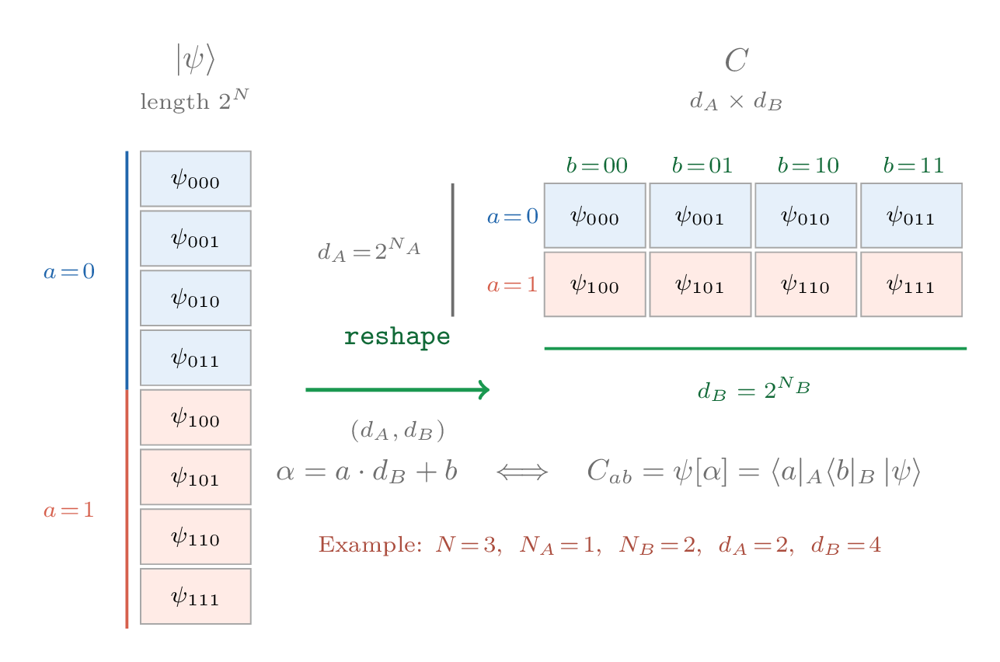
Why is this step crucial? With the coefficient matrix $C = (c_{ab})$, all formulas from §3–4 immediately become standard matrix operations:
为什么这一步是关键？ 有了系数矩阵 $C = (c_{ab})$，§3–4 的所有公式立刻变成标准矩阵运算：
- $\rho_A = CC^\dagger$ (summing over $B$'s index $b$对 $B$ 的指标 $b$ 求和)
- SVD $C = U\Sigma V^\dagger$ directly gives the Schmidt decomposition直接给出 Schmidt 分解
In other words, reshape is the bridge between the physical decomposition and numerical linear algebra.
换句话说，reshape 是物理分解与数值线性代数之间的桥梁。
Convention note: NumPy's
reshapedefaults to C-order (row-major), where the last index varies fastest. This matches the "$b$ varies fastest" convention above, soreshape(d_A, d_B)works correctly without additional parameters.约定提醒：NumPy 的
reshape默认使用 C-order（行优先），最后一个索引变化最快。这与上面"$b$ 跑得最快"的约定一致，所以reshape(d_A, d_B)无需额外参数即可正确工作。
Column-major languages (Fortran / MATLAB / Julia etc.) default to column-major. If you use Fortran-style reshape, the resulting $C_{ab}$ may not match this article's convention. This entire article, all code, and all figures use NumPy's default C-order (row-major).
列优先语言（Fortran / MATLAB / Julia 等）默认列优先。若使用 Fortran 风格的 reshape，得到的 $C_{ab}$ 可能与本文约定不一致。全文、代码与图均按 NumPy 默认的 C-order（行优先）。
5.1 Method 1: Density Matrix Eigendecomposition 5.1 方法一：密度矩阵本征分解
The most straightforward implementation: first construct $\rho_A$, then find its eigenvalues.
最直接的实现：先构建 $\rho_A$，再求本征值。
Code (see ee/core.py):
代码（见 ee/core.py）：
def ee_method1(psi, N, NA=None):
C = psi.reshape(2 ** (N // 2), -1) # Step 1
rho_A = C @ C.conj().T # Step 2
evals = np.linalg.eigvalsh(rho_A) # Step 3
evals = evals[evals > 1e-14] # Remove numerical zeros
return -np.dot(evals, np.log(evals)) # Step 4Complexity: Step 2 matrix multiplication $O(d_A^2 d_B)$, step 3 eigendecomposition $O(d_A^3)$. Total $O(2^{3N/2})$.
复杂度：步骤 2 的矩阵乘法 $O(d_A^2 d_B)$，步骤 3 的本征分解 $O(d_A^3)$。总计 $O(2^{3N/2})$。
5.2 Method 2: Direct SVD (Recommended) 5.2 方法二：直接 SVD（推荐）
Skip the explicit construction of $\rho_A$ and directly perform SVD on $C$.
跳过 $\rho_A$ 的显式构建，直接对 $C$ 做 SVD。
Code (see ee/core.py):
代码（见 ee/core.py）：
def ee_method2(psi, N, NA=None):
C = psi.reshape(2 ** (N // 2), -1)
sv = np.linalg.svd(C, compute_uv=False) # Only singular values
lam = sv ** 2
lam = lam[lam > 1e-14]
return -np.dot(lam, np.log(lam))Complexity: SVD complexity is $O(d_A^2 d_B)$ (assuming $d_A \leq d_B$), comparable to Method 1, but with a smaller constant factor (compute_uv=False only computes singular values).
复杂度：SVD 的复杂度为 $O(d_A^2 d_B)$（假设 $d_A \leq d_B$），与方法一相当，但常数因子更小（compute_uv=False 只计算奇异值）。
5.3 Why Method 2 Is Better 5.3 方法二为什么更好
Method 2 is superior to Method 1 in both numerical stability and speed.
方法二在数值稳定性和速度上都优于方法一。
Stability. Method 1 performs the matrix multiplication $\rho_A = CC^\dagger$ in step 2, which squares the condition number of $C$. If $\sigma_{\min} = 10^{-8}$, then Method 1 gives $\lambda_{\min} = 10^{-16}$, already at the edge of float64 machine precision ($\epsilon \approx 2.2 \times 10^{-16}$). Method 2 directly reads $\sigma_{\min} = 10^{-8}$ from the SVD of $C$, well above machine precision.
稳定性。方法一在步骤 2 中做矩阵乘法 $\rho_A = CC^\dagger$，这会把 $C$ 的条件数平方。如果 $\sigma_{\min} = 10^{-8}$，方法一得 $\lambda_{\min} = 10^{-16}$，已经到 float64 机器精度（$\epsilon \approx 2.2 \times 10^{-16}$）的边缘。方法二直接从 $C$ 的 SVD 读出 $\sigma_{\min} = 10^{-8}$，远在机器精度之上。
Speed. Method 1 requires one matrix multiplication and one eigendecomposition. Method 2's SVD uses LAPACK's divide-and-conquer algorithm, and compute_uv=False only computes singular values.
速度。方法一需要一次矩阵乘法和一次本征分解。方法二的 SVD 采用 LAPACK 的分治算法，compute_uv=False 只计算奇异值。
Conclusion: Method 2 is the default choice for computing entanglement entropy.
结论：方法二是精确对角化计算纠缠熵的默认选择。
5.4 Method 3 & 4: Randomized SVD 5.4 方法三与方法四：随机化 SVD
Methods 1 and 2 both have time complexity $O(2^{3N/2})$, because they compute all singular values. But many physical states (area-law ground states, MBL eigenstates) have rapidly decaying Schmidt spectra, with only the first $\chi$ singular values being significant. If we know (or can estimate) $\chi$, we can use randomized SVD [8] for major speedup: compute only the top $k$ singular values. For an $m \times n$ matrix ($m \leq n$), full SVD requires $O(m^2 n)$; randomized SVD totals $O((2q+3)\, mn\ell)$, where $\ell = k + p$ ($p \approx 5$ is oversampling). When $\ell \ll m$, there is significant speedup.
方法一和方法二的时间复杂度都是 $O(2^{3N/2})$，因为它们计算所有奇异值。但很多物理态（面积律基态、MBL 本征态）的 Schmidt 谱衰减很快，只有前 $\chi$ 个奇异值是显著的。如果我们知道（或能估计）$\chi$，就可以用随机化 SVD [8] 大幅加速：只计算前 $k$ 个奇异值。对 $m \times n$ 矩阵（$m \leq n$），完整 SVD 需要 $O(m^2 n)$；随机化 SVD 总计 $O((2q+3)\, mn\ell)$，其中 $\ell = k + p$（$p \approx 5$ 为过采样）。当 $\ell \ll m$ 时有显著加速。
Core Idea: Finding a "Just Big Enough" Subspace核心思想：找到一个"刚好够大"的子空间
The strategy has two steps:
策略分两步：
- Probe: Find an $m \times \ell$ orthogonal matrix $Q$ such that the columns of $Q$ approximately span the space of $C$'s top $k$ left singular vectors.
- Compress: Project $C$ onto this small subspace $B = Q^T C$, yielding a small $\ell \times n$ matrix. A full SVD of $B$ is cheap.
- 探测：找到一个 $m \times \ell$ 的正交矩阵 $Q$，使得 $Q$ 的列近似张成 $C$ 的前 $k$ 个左奇异向量的空间。
- 压缩：把 $C$ 投影到这个小子空间 $B = Q^T C$，得到一个 $\ell \times n$ 的小矩阵。对 $B$ 做完整 SVD 很便宜。
Why Random Projection Can "Probe" the Column Space随机投影为什么能"探测"列空间？
The answer is surprisingly simple: multiply $C$ by random vectors. Generate an $n \times \ell$ random Gaussian matrix $\Omega$ and compute
答案出人意料地简单：用 $C$ 乘随机向量。生成一个 $n \times \ell$ 的随机高斯矩阵 $\Omega$，计算
$$Y = C\,\Omega \qquad (m \times \ell)$$
Let $C$'s SVD be $C = U\Sigma V^T$, then $C\Omega = U\,\Sigma\,(V^T\Omega)$. Since $G \equiv V^T\Omega$ is still a random Gaussian matrix:
设 $C$ 的 SVD 为 $C = U\Sigma V^T$，那么 $C\Omega = U\,\Sigma\,(V^T\Omega)$。由于 $G \equiv V^T\Omega$ 仍然是随机高斯矩阵：
$$Y = U\,\Sigma\,G = \sum_{i=1}^{m} \sigma_i\, \mathbf{u}_i\, \mathbf{g}_i^T$$
Large singular value directions dominate $Y$, while small singular value directions are suppressed. Therefore $Y$'s column space is naturally dominated by the top $k$ left singular vectors.
大奇异值方向在 $Y$ 中占主导，小奇异值方向被压制。因此 $Y$ 的列空间自然而然地由前 $k$ 个左奇异向量主导。
Intuition: Think of $C$ as a filter — random vectors go in, low-rank structure comes out.
直觉：把 $C$ 想象成一个滤波器——随机向量进去，低秩结构出来。
Why does orthogonal transformation preserve the Gaussian distribution?为什么正交变换保持高斯分布？ (click to expand proof点击展开证明)
Proposition: If $\Omega$ is a random Gaussian matrix ($\Omega_{ij} \overset{\text{i.i.d.}}{\sim} N(0,1)$) and $V$ is an orthogonal matrix, then $G = V^T\Omega$ has the same distribution as $\Omega$.
命题：若 $\Omega$ 是随机高斯矩阵（$\Omega_{ij} \overset{\text{i.i.d.}}{\sim} N(0,1)$），$V$ 是正交矩阵，则 $G = V^T\Omega$ 与 $\Omega$ 同分布。
Verify three things: (1) $G_{ij}$ is normally distributed. (2) Zero mean. (3) Same covariance:
验证三件事：（1）$G_{ij}$ 是正态分布。（2）均值为零。（3）协方差相同：
$$\text{Cov}(G_{ij},\, G_{i'j'}) = \delta_{jj'}\,(V^TV)_{ii'} = \delta_{ii'}\delta_{jj'}$$
In one sentence: The standard Gaussian distribution is spherically symmetric; an orthogonal transformation is just a rotation.
一句话：标准高斯分布是球对称的，正交变换只是旋转，不改变球的形状。
Power Iteration: When the Spectral Decay Isn't Fast Enough功率迭代：当谱衰减不够快时
The solution is power iteration: instead of directly using $Y = C\Omega$, repeatedly "filter" with $C$ and $C^T$:
解决办法是功率迭代（power iteration）：不直接用 $Y = C\Omega$，而是反复用 $C$ 和 $C^T$ "过滤"：
$$Y = (CC^T)^q\, C\,\Omega$$
This is equivalent to performing random projection on a matrix with singular values $\sigma_i^{2q+1}$. The ratio of adjacent singular values becomes $\left(\frac{\sigma_k}{\sigma_{k+1}}\right)^{2q+1}$.
这等价于对一个奇异值为 $\sigma_i^{2q+1}$ 的矩阵做随机投影。相邻奇异值的比值变成 $\left(\frac{\sigma_k}{\sigma_{k+1}}\right)^{2q+1}$。
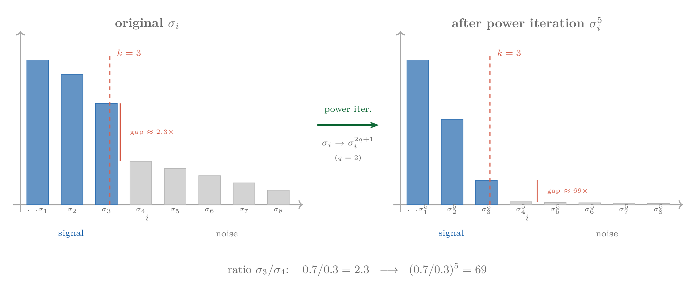
In practice $q = 1$ or $2$ suffices.
实际中 $q = 1$ 或 $2$ 就够了。
Complete Algorithm完整算法
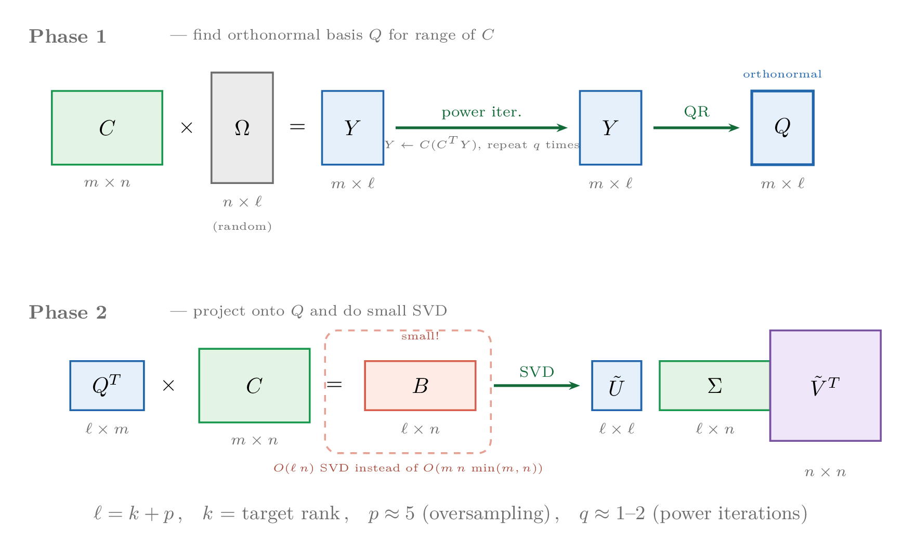
Method 3 (hand-written implementation) (see ee/core.py):
方法三（手写实现）（见 ee/core.py）：
def rsvd(C, k, p=5, n_iter=2):
m, n = C.shape
Omega = np.random.randn(n, k + p)
Y = C @ Omega
for _ in range(n_iter): # Power iteration
Y = C @ (C.conj().T @ Y)
Q, _ = np.linalg.qr(Y) # Orthogonal basis
B = Q.conj().T @ C # Project to small subspace
_, s, _ = np.linalg.svd(B, full_matrices=False)
return s[:k]Method 4 (sklearn implementation) (see ee/core.py):
方法四（sklearn 实现）（见 ee/core.py）：
from sklearn.utils.extmath import randomized_svd
_, s, _ = randomized_svd(C, n_components=k,
n_oversamples=5, # oversampling p
n_iter=2, # power iterations q
power_iteration_normalizer='QR')When to Use Randomized SVD什么时候用随机化 SVD？
| State Type态类型 | $\chi$ | Is rSVD Suitable?随机化 SVD 适合吗？ |
|---|---|---|
| Area law (1D ground state, MBL)面积律（一维基态、MBL） | $O(1)$ | Very suitable: $k = O(1)$ suffices非常适合：$k = O(1)$ 即可 |
| Logarithmic law (1D critical)对数律（一维临界） | $O(L^\alpha)$ | Suitable: $k \ll 2^{N/2}$适合：$k \ll 2^{N/2}$ |
| Volume law (thermalized state)体积律（热化态） | $O(2^{N/2})$ | Not suitable: needs $k \approx d$, no speedup不适合：需要 $k \approx d$，没有加速 |
Numerical Verification数值验证：精度与 $S_A = S_B$
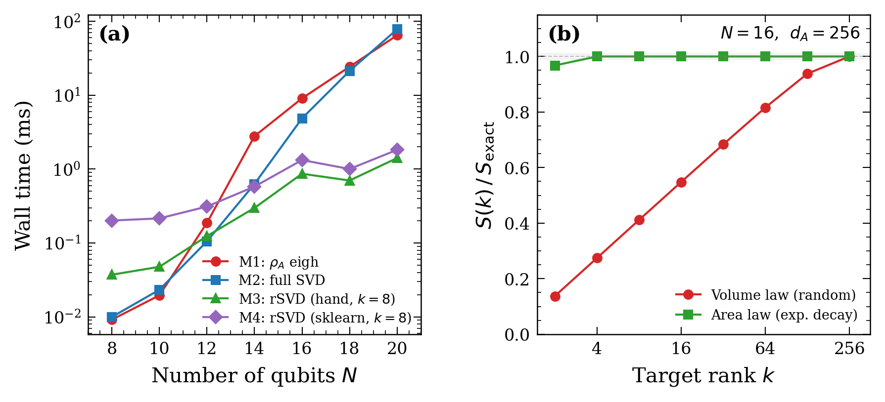
(a) Wall-clock time vs system size $N$ for four methods (random state, $k = 8$). Methods 1 and 2 grow exponentially; Methods 3 and 4 grow significantly slower when $k$ is fixed. (b) rSVD convergence ($N = 16$, $d_A = 256$): area-law state converges at $k = 4$; volume-law state requires $k \approx d_A$. Data source: demos/bench_methods.py.
(a) 四种方法的计算时间随系统尺寸 $N$ 的变化（随机态，$k = 8$）。方法 1 和方法 2 呈指数增长；方法 3 和方法 4 在 $k$ 固定时增长显著放缓。(b) rSVD 收敛性（$N = 16$，$d_A = 256$）：面积律态在 $k = 4$ 即收敛；体积律态需 $k \approx d_A$。数据来源：demos/bench_methods.py。
| $N$ | $S_A$ | $S_B$ | $\|S_A - S_B\|$ | $S_1$ | $S_2$ | $S_3$ | $S_4$ |
|---|---|---|---|---|---|---|---|
| 8 | 2.2368 | 2.2368 | 0 | 2.2368 | 2.2368 | 2.2368 | 2.2368 |
| 10 | 3.0062 | 3.0062 | 0 | 3.0062 | 3.0062 | 3.0062 | 3.0062 |
| 12 | 3.6547 | 3.6547 | 0 | 3.6547 | 3.6547 | 3.6547 | 3.6547 |
| 14 | 4.3620 | 4.3620 | 0 | 4.3620 | 4.3620 | 4.3620 | 4.3620 |
Numerical Stability: Condition Number Test数值稳定性：条件数测试
| $\alpha$ | $\kappa(C)$ | $S_{\mathrm{exact}}$ | $\|S_1 - S_{\mathrm{exact}}\|$ | $\|S_2 - S_{\mathrm{exact}}\|$ |
|---|---|---|---|---|
| 0.01 | $1.3 \times 10^1$ | 4.875 | $0$ | $0$ |
| 0.05 | $3.4 \times 10^5$ | 3.303 | $4 \times 10^{-16}$ | $4 \times 10^{-16}$ |
| 0.10 | $1.2 \times 10^{11}$ | 2.611 | $2 \times 10^{-12}$ | $2 \times 10^{-12}$ |
| 0.20 | $4.8 \times 10^{14}$ | 1.923 | $9 \times 10^{-13}$ | $9 \times 10^{-13}$ |
| 0.50 | $5.8 \times 10^{14}$ | 1.041 | $4 \times 10^{-13}$ | $4 \times 10^{-13}$ |
| 1.00 | $5.8 \times 10^{14}$ | 0.458 | $6 \times 10^{-14}$ | $6 \times 10^{-14}$ |
When does Method 1 have problems? The danger of condition number squaring is more pronounced when eigenvalues themselves are needed (entanglement spectrum analysis), for higher-order Renyi entropy, or for larger systems.
何时方法一会出问题？ 条件数平方的危害在需要本征值本身（纠缠谱分析）、高阶 Renyi 熵、或更大系统时更明显。
Summary总结
| Method方法 | Time时间 | Space空间 | Stability稳定性 | Use Case适用场景 |
|---|---|---|---|---|
| Method 1 ($\rho_A$ eigenvalues)方法一（$\rho_A$ 本征值） | $O(d_A^3)$ | $O(d_A^2)$ | Poor (condition number squared)差（条件数平方） | When $\rho_A$ is needed需要 $\rho_A$ 时 |
| Method 2 (direct SVD)方法二（直接 SVD） | $O(d_A^2 d_B)$ | $O(d_A d_B)$ | Good好 | General default choice通用默认选择 |
| Method 3 (hand-written rSVD)方法三（手写 rSVD） | $O(d_A d_B k)$ | $O(d_A k)$ | Good好 | Area-law states; understanding the algorithm面积律态；理解算法 |
| Method 4 (sklearn rSVD)方法四（sklearn rSVD） | $O(d_A d_B k)$ | $O(d_A k)$ | Good好 | Area-law states (production recommended)面积律态（生产推荐） |
6. Correlation Matrix Method for Free Fermions 6. 自由费米子的关联矩阵方法
The four methods of §5 apply to any quantum state, but at the cost of handling a $2^N$-dimensional coefficient vector. For free (non-interacting) fermions, there is a fundamentally different shortcut: the entanglement information is entirely compressed into an $|A| \times |A|$ single-particle matrix. For interacting systems, this method does not apply.
§5 的四种方法适用于任意量子态，但代价是必须处理 $2^N$ 维的系数向量。对自由（非相互作用）费米子，有一条根本性的捷径：纠缠信息已经完全压缩在一个 $|A| \times |A|$ 的单粒子矩阵里了。对于有相互作用的系统，这个方法不适用。
6.1 Intuition: Why the Many-Body Wavefunction Is Not Needed 6.1 直觉：为什么不需要多体波函数？
Free fermions have a special property: all many-body information is completely determined by the two-point correlator $\langle c_i^\dagger c_j \rangle$. This is a consequence of Wick's theorem. Therefore, we only need the $N \times N$ correlation matrix $G$, not the $2^N$-dimensional wavefunction.
自由费米子有一个特殊性质：所有多体信息都由二点关联函数 $\langle c_i^\dagger c_j \rangle$ 完全决定。这是 Wick 定理的推论。因此，我们只需要 $N \times N$ 的关联矩阵 $G$，而不是 $2^N$ 维的波函数。
6.2 Theorem and Derivation 6.2 定理与推导
Theorem (Peschel 2003 [9]): For a particle-number-conserving free fermion ground state (Slater determinant), the entanglement entropy can be computed solely from the eigenvalues $\xi_k \in [0, 1]$ of the single-particle correlation matrix restricted to subsystem $A$:
定理（Peschel 2003 [9]）：对保粒子数的自由费米子基态（Slater 行列式），纠缠熵可以仅从子系统 $A$ 上的单粒子关联矩阵的本征值 $\xi_k \in [0, 1]$ 计算：
$$G_{ij} = \langle c_i^\dagger c_j \rangle, \qquad i, j \in A$$
$$S = -\sum_k \bigl[\xi_k \ln \xi_k + (1 - \xi_k)\ln(1 - \xi_k)\bigr]$$
Scope of applicability: Here we assume particle number conservation. For free fermions with pairing (BCS/BdG states), anomalous correlators $F_{ij} = \langle c_i c_j\rangle$ are also required.
适用范围：这里假设粒子数守恒。对有配对的自由费米子（BCS/BdG 态），还需要异常关联 $F_{ij} = \langle c_i c_j\rangle$。
Why do the $\xi_k$ directly give the entanglement entropy? The key insight has three steps:
为什么 $\xi_k$ 直接给出纠缠熵？ 关键洞察分三步：
- Partial trace preserves free-fermion structure. $\rho_A$ can be written as $\rho_A = Z^{-1}\exp(-\sum_{ij} h_{ij} c_i^\dagger c_j)$, where $h$ is an $|A| \times |A|$ Hermitian matrix (the "entanglement Hamiltonian").
- Diagonalize $G_A$ to find independent modes. In the eigenbasis, all modes are completely decoupled. $\rho_A = \bigotimes_k \operatorname{diag}(1-\xi_k,\, \xi_k)$.
- Entropy of a product state is the sum of individual entropies. Each two-level system contributes $-\xi_k \ln\xi_k - (1-\xi_k)\ln(1-\xi_k)$.
- 偏迹保持自由费米子结构。 $\rho_A$ 可以写成 $\rho_A = Z^{-1}\exp(-\sum_{ij} h_{ij} c_i^\dagger c_j)$ 的形式，其中 $h$ 是"纠缠哈密顿量"。
- 对角化 $G_A$ 找到独立模式。 在本征基下各模式完全解耦。$\rho_A = \bigotimes_k \operatorname{diag}(1-\xi_k,\, \xi_k)$。
- 直积态的熵是各部分熵之和。 每个二能级系统贡献 $-\xi_k \ln\xi_k - (1-\xi_k)\ln(1-\xi_k)$。
6.3 Complexity Comparison 6.3 复杂度对比
| Method方法 | Complexity复杂度 | $|A| = 100$ |
|---|---|---|
| General SVD (§5)通用 SVD（§5） | $O(2^{N_A} \cdot 2^{N_B} \cdot 2^{N_A})$ | Exponential blowup随总粒子数指数爆炸 |
| Correlation matrix (this section)关联矩阵（本节） | $O(|A|^3)$ | $100^3 = 10^6$ |
6.4 Constructing the Correlation Matrix 6.4 构建关联矩阵
For a tight-binding Hamiltonian $H = -t \sum_{\langle i,j \rangle} c_i^\dagger c_j$, first diagonalize the $N \times N$ single-particle Hamiltonian matrix. At half-filling, occupy the lowest $N/2$ single-particle states; the correlation matrix is
对 tight-binding 哈密顿量 $H = -t \sum_{\langle i,j \rangle} c_i^\dagger c_j$，先对角化 $N \times N$ 的单粒子哈密顿矩阵。半满时占据最低的 $N/2$ 个单粒子态，关联矩阵为
$$G_{ij} = \sum_{k \in \text{occupied}} \phi_k(i)^* \phi_k(j)$$
Code (see ee/free_fermion.py and lattices/chain_1d.py):
代码（见 ee/free_fermion.py 和 lattices/chain_1d.py）：
def ee_corr_matrix(G, subsystem):
G_A = G[np.ix_(subsystem, subsystem)] # Restrict to subsystem A
xi = np.linalg.eigvalsh(G_A)
xi = np.clip(xi, 1e-14, 1 - 1e-14) # Avoid log(0)
return -np.sum(xi * np.log(xi) + (1 - xi) * np.log(1 - xi))7. Code in Action: 1D Chain and CFT Verification 7. 代码实战：一维链与 CFT 验证
7.1 Project Structure 7.1 项目结构
entanglement-entropy-tutorial/
├── ee/ Core module
│ ├── core.py Four general EE methods (§5)
│ └── free_fermion.py Correlation matrix method (§6)
├── lattices/ Lattice construction
│ ├── chain_1d.py 1D chain
│ ├── square_2d.py 2D square lattice
│ ├── honeycomb_2d.py Honeycomb lattice
│ └── subsystems.py Subsystem selection
├── demos/
│ ├── demo_1d_cft.py 1D CFT verification (this section)
│ ├── demo_2d_area_law.py 2D area law (§8)
│ ├── demo_compare_methods.py Method comparison
│ └── bench_methods.py Performance benchmark (§5 data source)
├── tests/ Unit tests
└── data/ Output dataFull source: github.com/ChrisWenChen/entanglement-entropy-tutorial
完整源码：github.com/ChrisWenChen/entanglement-entropy-tutorial
7.2 Why Half-Chain 7.2 为什么看半链
To verify the CFT prediction with the fewest parameters, we fix the subsystem to be the half-chain ($\ell = L/2$). This eliminates the $\sin(\pi\ell/L)$ factor in the CFT formula, making the result depend only on $\ln L$.
为了用最少的参数验证 CFT 预言，我们固定只看半链（$\ell = L/2$）的纠缠熵。这样可以消除 CFT 公式中的 $\sin(\pi\ell/L)$ 因子，使结果只依赖 $\ln L$。
7.3 CFT Prediction for the 1D Free Fermion 7.3 一维自由费米子的 CFT 预言
The 1D XX model (free fermion) at half-filling is a gapless critical system, with low-energy effective theory given by a $c = 1$ free boson CFT.
一维 XX 模型（自由费米子）在半满时是无隙的临界系统，低能有效理论是 $c = 1$ 的自由玻色 CFT。
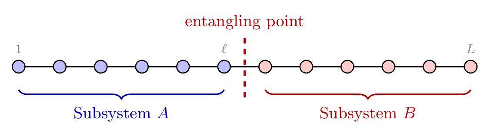
For open boundary conditions (OBC) on a chain of length $L$, taking the first $\ell$ sites from the left end as subsystem $A$:
对于开边界（OBC）长度为 $L$ 的链，取从左端开始的 $\ell$ 个格点为子系统 $A$：
$$S = \frac{c}{6}\ln\left(\frac{2L}{\pi a}\sin\frac{\pi\ell}{L}\right) + c_1'$$
For the half-chain $\ell = L/2$, since $\sin(\pi/2) = 1$:
取半链 $\ell = L/2$，由于 $\sin(\pi/2) = 1$：
$$S_{\text{half}} = \frac{c}{6}\ln\frac{2L}{\pi} + c_1' = \frac{1}{6}\ln L + \text{const}$$
The key prediction is the coefficient $1/6$.
关键预言是系数 $1/6$。
OBC vs PBC coefficient differs by a factor of two. Under PBC a connected interval has two entangling points, while under OBC an interval starting from the boundary has only one. Therefore the OBC logarithmic coefficient $c/6$ is half the PBC value of $c/3$ [2].
OBC vs PBC 系数差一倍。PBC 下一个连续区间有两个 entangling point，而 OBC 下从边界起算的区间只有一个。因此 OBC 的对数项系数 $c/6$ 是 PBC 的 $c/3$ 的一半 [2]。
7.4 Numerical Verification 7.4 数值验证
Run demos/demo_1d_cft.py to compute the half-chain entanglement entropy for open chains from $L = 10$ to $800$:
运行 demos/demo_1d_cft.py，对 $L = 10$ 到 $800$ 的开链计算半链纠缠熵：
from ee import ee_corr_matrix
from lattices import chain_1d
for L in [10, 14, 20, 30, 50, 80, 100, 200, 400, 800]:
G = chain_1d(L, pbc=False)
S = ee_corr_matrix(G, list(range(L // 2)))Results:
结果：
| $L$ | $S_{\text{half}}$ | $(1/6)\ln(2L/\pi)$ | Difference差值 |
|---|---|---|---|
| 10 | 0.7578 | 0.3085 | 0.449 |
| 20 | 0.7581 | 0.4240 | 0.334 |
| 50 | 0.9585 | 0.5767 | 0.382 |
| 100 | 1.0492 | 0.6923 | 0.357 |
| 200 | 1.1677 | 0.8078 | 0.360 |
| 400 | 1.2848 | 0.9233 | 0.361 |
| 800 | 1.4011 | 1.0388 | 0.362 |
Linear fit $S = a \ln L + b$ for $L \geq 50$:
对 $L \geq 50$ 的数据做线性拟合 $S = a \ln L + b$：
$$a = 0.1636, \qquad \frac{c}{6} = \frac{1}{6} = 0.1667$$
Relative error 1.8%. The deviation mainly comes from finite-size, boundary, and lattice corrections.
相对误差 1.8%。偏差主要来自有限尺寸、边界和格点修正。
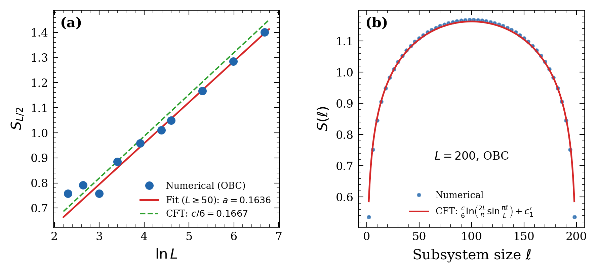
8. Extension to Two Dimensions 8. 推广到二维
8.1 Choice of Bipartition 8.1 二分的选取
The entanglement entropy of a 2D system depends on how subsystem $A$ is chosen. Common cuts include:
二维系统的纠缠熵依赖于子系统 $A$ 的选取方式。常见的切法有：
- Cylindrical cut: $A$ is the left half of the rectangle; the boundary is a straight line along the $y$-direction of length $L_y$
- Strip cut: $A$ is the top half of rows
- Circular cut: $A$ is a central disk — often used with Kitaev-Preskill or Levin-Wen multi-region combinations to extract topological entanglement entropy
- 柱形切割：$A$ 是左半矩形，边界是一条沿 $y$ 方向的直线，长度为 $L_y$
- 条形切割：$A$ 是上半行
- 圆形切割：$A$ 是中心圆盘——常与 Kitaev-Preskill 或 Levin-Wen 多区域组合一起用于提取拓扑纠缠熵
This article uses the cylindrical cut (most common), taking all sites with $x < L_x/2$ as $A$. The cut area (boundary length) is $|\partial A| = L_y$.
本文使用柱形切割（最常见），即取 $x < L_x/2$ 的所有格点为 $A$。此时切口面积（边界长度）$|\partial A| = L_y$。
8.2 Area Law 8.2 面积律
The ground state entanglement entropy of gapped systems obeys the area law [1, 7]:
有隙系统基态的纠缠熵满足面积律 [1, 7]：
$$S \sim \alpha\, |\partial A|$$
However, there are two important classes of corrections:
但面积律有两类重要的修正：
- Logarithmic correction (Fermi surface): If the system has an extended Fermi surface, Gioev and Klich [11] showed that $S \sim \alpha\, L_y \ln L_y$.
- Topological entanglement entropy: Topologically ordered states satisfy $S = \alpha\, |\partial A| - \gamma$, where $\gamma = \ln \mathcal{D}$.
- 对数修正（Fermi 面）：如果系统有延展的 Fermi 面，Gioev 和 Klich [11] 给出 $S \sim \alpha\, L_y \ln L_y$。
- 拓扑纠缠熵：拓扑有序态满足 $S = \alpha\, |\partial A| - \gamma$，其中 $\gamma = \ln \mathcal{D}$。
8.3 Free Fermions on the Square Lattice 8.3 方格子自由费米子
On an $L \times L$ square lattice, the tight-binding Hamiltonian at half-filling has a square Fermi surface. Therefore we expect $S/L_y$ to grow logarithmically with $L_y$.
在 $L \times L$ 的方格子上，tight-binding 哈密顿量半满时存在一个正方形 Fermi 面。因此预期 $S/L_y$ 随 $L_y$ 对数增长。
Code (see demos/demo_2d_area_law.py):
代码（见 demos/demo_2d_area_law.py）：
from lattices import square_2d, subsystem_left_half
from ee import ee_corr_matrix
for L in [4, 6, 8, 10, 12, 16, 20]:
G = square_2d(L, L, pbc=False)
sub = subsystem_left_half(L, L, sites_per_cell=1)
S = ee_corr_matrix(G, sub)Results:
结果：
| $L$ | $N = L^2$ | $S$ | $S/L$ |
|---|---|---|---|
| 4 | 16 | 1.81 | 0.452 |
| 6 | 36 | 3.44 | 0.573 |
| 8 | 64 | 4.39 | 0.549 |
| 10 | 100 | 5.87 | 0.587 |
| 12 | 144 | 7.77 | 0.648 |
| 16 | 256 | 10.43 | 0.652 |
| 20 | 400 | 13.87 | 0.693 |
$S/L$ does not converge to a constant but grows slowly — consistent with the Widom conjecture's $\ln L$ behavior.
$S/L$ 没有收敛到常数，而是缓慢增长——与 Widom 猜想的 $\ln L$ 行为一致。
8.4 Free Fermions on the Honeycomb Lattice 8.4 蜂窝格点自由费米子
The honeycomb lattice presents a fundamentally different situation. Each unit cell has two sites (A and B sublattices), and the band structure yields two Dirac cones. At half-filling, the Fermi "surface" degenerates to two points — there is no extended Fermi surface. Therefore the leading $L\ln L$ enhancement does not appear.
蜂窝格点（honeycomb lattice）的情况截然不同。每个单胞有两个格点（A、B 子格），能带结构给出两个 Dirac 锥。半满时 Fermi "面"退化为两个点——没有延展的 Fermi 面。因此不出现 $L\ln L$ 的主导增强。
Logarithmic terms can appear as subleading corrections. If the subregion boundary has corners, a universal corner logarithmic correction appears:
对数项可以作为次领先修正出现。如果子区域边界有尖角，会出现普适的角点对数修正：
$$S = \alpha\, L_y + a_2 \ln L_y + \text{const}$$
Code (see demos/demo_2d_area_law.py):
代码（见 demos/demo_2d_area_law.py）：
from lattices import honeycomb_2d, subsystem_left_half
from ee import ee_corr_matrix
for L in [4, 6, 8, 10, 12, 16, 20]:
G = honeycomb_2d(L, L, pbc=False)
sub = subsystem_left_half(L, L, sites_per_cell=2)
S = ee_corr_matrix(G, sub)Results:
结果：
| $L$ | $N = 2L^2$ | $S$ | $S/L$ |
|---|---|---|---|
| 4 | 32 | 2.34 | 0.585 |
| 6 | 72 | 3.77 | 0.628 |
| 8 | 128 | 5.17 | 0.646 |
| 10 | 200 | 6.55 | 0.655 |
| 12 | 288 | 7.93 | 0.661 |
| 16 | 512 | 10.66 | 0.666 |
| 20 | 800 | 13.39 | 0.669 |
Compared to the square lattice, the honeycomb lattice's $S/L$ converges much faster — this is precisely the difference between a "point Fermi surface" (Dirac points) and a "line Fermi surface".
与方格子对比，蜂窝格点的 $S/L$ 收敛更快——这正是"点 Fermi 面"（Dirac 点）vs"线 Fermi 面"的区别。
8.5 Literature Benchmark Comparison 8.5 文献基准对比
| System系统 | Prediction预言 | This Work本文数值 | Literature Benchmark文献基准 |
|---|---|---|---|
| 1D XX chain链 (OBC) | $S \sim \frac{1}{6}\ln L$ | Coefficient系数 $0.164 \pm 0.003$ | Vidal et al. [3]: $1/6 = 0.167$ |
| 2D square lattice, half-filling2D 方格子半满 | $S/L$ diverges logarithmically对数发散 | $S/L$: 0.45 → 0.69 ($L$: 4 → 20) | Gioev & Klich [11]: $S \sim L \ln L$ |
| Honeycomb, half-filling半满 | $S \sim \alpha L$ (area law dominant面积律主导) | $S/L$ → $\approx 0.67$ | D'Emidio et al. [6] |
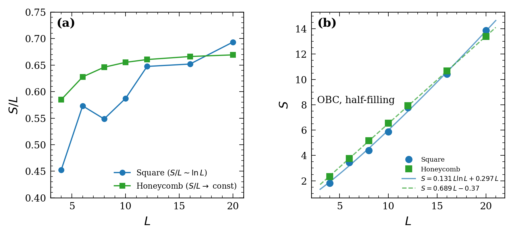
9. Summary 9. 总结
Core takeaways of this article:
本文的核心要点：
- For general pure states, computing entanglement entropy reduces to performing SVD on the coefficient matrix (partial trace → reshape → SVD); for free fermions, there is an even more efficient correlation matrix method
- Method 2 (direct SVD) is the general default choice: more stable than Method 1 because it avoids squaring the condition number
- Randomized SVD provides significant speedup for states with low effective rank (area law, MBL), but is ineffective for volume-law states
- The correlation matrix method for free fermions reduces complexity from exponential in Hilbert space dimension to $O(|A|^3)$
- 1D CFT prediction $S = \frac{c}{6}\ln L$ (OBC) is numerically verified, with fitted coefficient within < 2% of the theoretical value $1/6$
- Free fermions on the 2D square lattice (extended Fermi surface): $S/L$ diverges logarithmically (Widom conjecture); free fermions on the honeycomb lattice (Dirac points): $S/L$ tends to a constant (area law dominant)
- 对一般纯态，纠缠熵计算可归结为对系数矩阵做一次 SVD（偏迹 → reshape → SVD）；对自由费米子，还有更高效的关联矩阵方法
- 方法二（直接 SVD）是通用默认选择：比方法一更稳定，因为避免了条件数平方
- 随机化 SVD 对低有效秩的态（面积律、MBL）有显著加速，但对体积律态无效
- 自由费米子的关联矩阵方法将复杂度从随 Hilbert 空间维数指数增长降到 $O(|A|^3)$
- 一维 CFT 预言 $S = \frac{c}{6}\ln L$（OBC）被数值验证，拟合系数与理论值 $1/6$ 相差 < 2%
- 自由费米子二维方格子（有延展 Fermi 面）的 $S/L$ 对数发散（Widom 猜想）；自由费米子蜂窝格点（Dirac 点）的 $S/L$ 趋于常数（面积律主导）
References 参考文献
- J. Eisert, M. Cramer, and M. B. Plenio, Area laws for the entanglement entropy, Rev. Mod. Phys. 82, 277 (2010). doi:10.1103/RevModPhys.82.277
- P. Calabrese and J. Cardy, Entanglement entropy and conformal field theory, J. Phys. A 42, 504005 (2009). doi:10.1088/1751-8113/42/50/504005
- G. Vidal, J. I. Latorre, E. Rico, and A. Kitaev, Entanglement in quantum critical phenomena, Phys. Rev. Lett. 90, 227902 (2003). doi:10.1103/PhysRevLett.90.227902
- B. Bauer and C. Nayak, Area laws in a many-body localized state and its implications for topological order, J. Stat. Mech. (2013) P09005. doi:10.1088/1742-5468/2013/09/P09005
- C. J. Turner, A. A. Michailidis, D. A. Abanin, M. Serbyn, and Z. Papić, Weak ergodicity breaking from quantum many-body scars, Nature Phys. 14, 745 (2018). doi:10.1038/s41567-018-0137-5
- J. D'Emidio, R. Orús, N. Laflorencie, and F. de Juan, Universal features of entanglement entropy in the honeycomb Hubbard model, Phys. Rev. Lett. 132, 076502 (2024). doi:10.1103/PhysRevLett.132.076502
- N. Laflorencie, Quantum entanglement in condensed matter systems, Phys. Rep. 646, 1 (2016). doi:10.1016/j.physrep.2016.06.008
- N. Halko, P. G. Martinsson, and J. A. Tropp, Finding structure with randomness: probabilistic algorithms for constructing approximate matrix decompositions, SIAM Rev. 53, 217 (2011). doi:10.1137/090771806
- I. Peschel, Calculation of reduced density matrices from correlation functions, J. Phys. A 36, L205 (2003). doi:10.1088/0305-4470/36/14/101
- P. Calabrese and J. Cardy, Entanglement entropy and quantum field theory, J. Stat. Mech. (2004) P06002. doi:10.1088/1742-5468/2004/06/P06002
- D. Gioev and I. Klich, Entanglement entropy of fermions in any dimension and the Widom conjecture, Phys. Rev. Lett. 96, 100503 (2006). doi:10.1103/PhysRevLett.96.100503
- J. M. Deutsch, Quantum statistical mechanics in a closed system, Phys. Rev. A 43, 2046 (1991). doi:10.1103/PhysRevA.43.2046
- M. Srednicki, Chaos and quantum thermalization, Phys. Rev. E 50, 888 (1994). doi:10.1103/PhysRevE.50.888
- M. Rigol, V. Dunjko, and M. Olshanii, Thermalization and its mechanism for generic isolated quantum systems, Nature 452, 854 (2008). doi:10.1038/nature06838